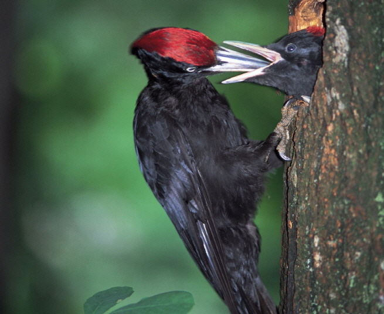

까막딱다구리

주요특징 및 설명
- 종명: 까막딱다구리(Black woodpecker)
- 학명: Dryocopus martius
- 생물학적 분류: 딱다구리과 까막딱다구리속
- 분포: 유럽 및 아시아 전역
- 등급: 멸종위기종 Ⅱ급, 천연기념물 제242호
- 주요 특징
까막딱다구리는 한반도 전역에 분포하는 텃새이다. 온몸은
흑색이며, 수컷의 두부와 암컷의 후두부만 붉은색이다. 나무를 쫄 때마다 산이 울릴 정도로 둔탁한 소리를 낸다. 크낙새와
비슷하지만, 크낙새는 배가 희고 까막딱따구리는 까맣다.